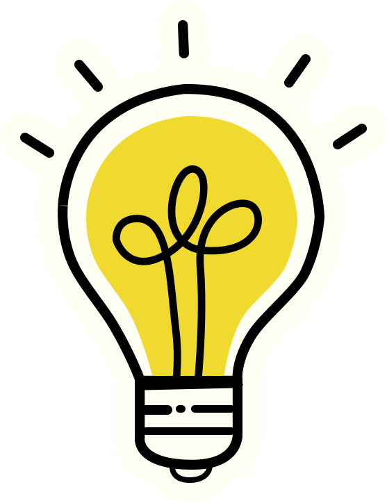

O que você vai produzir
Em cada visita (presencial ou virtual) você registrará suas descobertas no seu Passaporte Científico.
Esse registro será o produto esperado da atividade e deverá incluir:
- o espaço visitado (ou tour virtual realizado);
- os principais aspectos observados;
- reflexões sobre possibilidades pedagógicas para a Educação Infantil e o Ensino Fundamental I (1º ao 5º ano);
- conexões com habilidades e competências da BNCC;
- uma proposta de atividade ou sequência didática inspirada na experiência, mesmo que em rascunho.

Pense nesse passaporte como um pequeno portfólio de ideias: a cada carimbo, você acumula repertório para ensinar Ciências de um jeito mais investigativo, criativo e significativo.